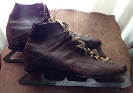
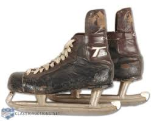
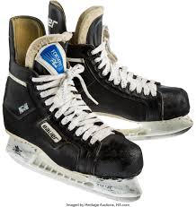
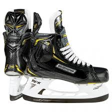

Back to Home
Back to Timeline
The first record of ice skates was in Finland 5 millenniums ago. In 1866, the first hockey specific skates were made. They were called the Starr hockey skates. These skates were very flimsy and offered very little support. They were very unforgettable.

These skates are some of the earliest CCM Tacks. They were extremely popular and offered more support than previous skates. They were also more comfortable. It was around this time that Bauer was born. They came up with a skate that offered more support and had a tendon guard.

The 1980s were really important for the evolution of skates. It was here, that skates were first made out of plastic. Before, skates were made from leather because of its ability to mould to the player’s foot, but leather offered very little protection. Plastic skates offered much more protection and didn’t get heavier as the game went on. With leather skates, the skates would become waterlogged because the leather absorbed water and didn’t release it. Because of this, the skates would become very heavy.

Minor changes have been made to skates every year. For example, Bauer has introduced an injected stability lacing system. Where in past models there would be individual eyelets, but now it is a plastic insert. This was introduced in 2013 to reduce weight and prevent lace bite by keeping the laces flat. The same year Bauer came out with a spring-loaded holder system. Where the blade can be removed with the trigger of the spring. In 2019 CCM came out with a dial that can remove the skate blade within seconds. There has been too much innovation in skates within the past 10 years to count. Most of which coming from Bauer and CCM but also from smaller companies like True and Marsblade. In 2018, Marsblade, a roller skate company came out with a skate holder than rocks back and forth via a hinge to keep more blade on the ice. While only one NHL player has used Marsblade in a game, these types of advancements will continue to grow the game of hockey.
